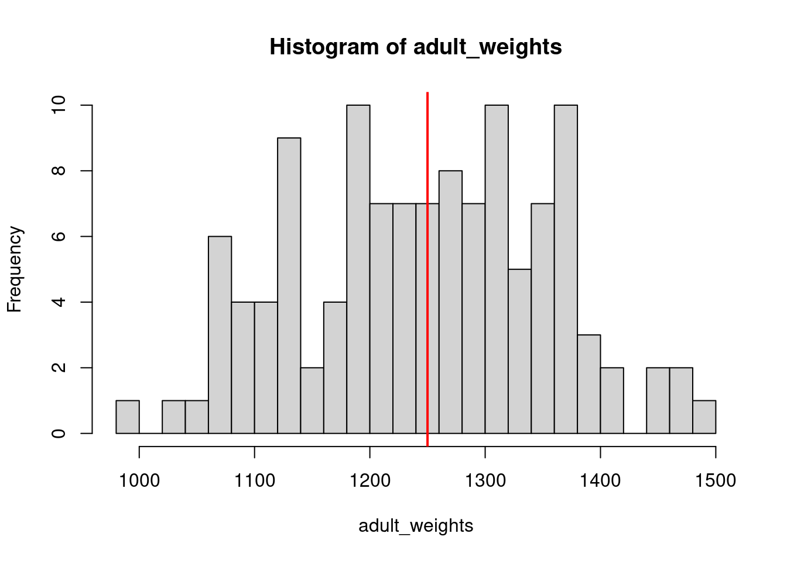
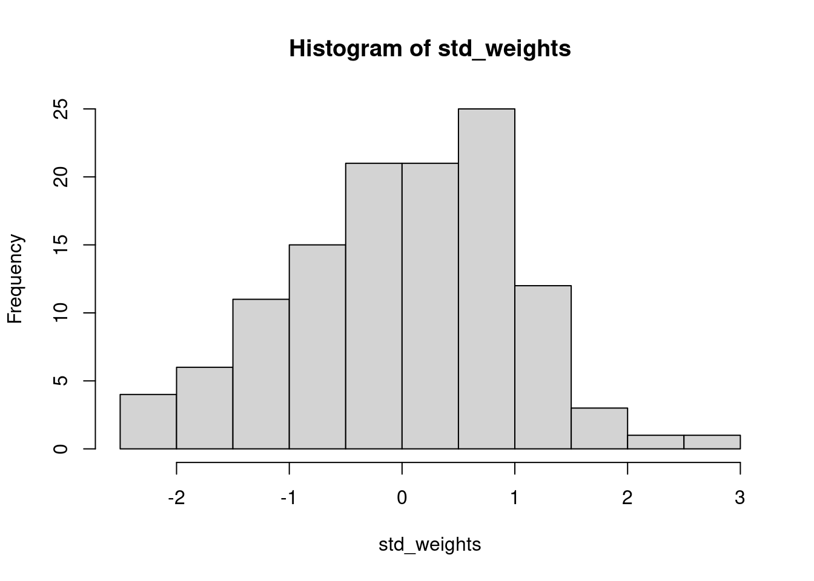

Simulating data can be a great way to understand what the assumptions are that we are baking into our models. It also lets us build and test models without having any data, which is lovely from a time perspective! We can generate data just for toying around, to figure out if a model could possibly work or if it has any weird behavior.
It also lets us visualize relationships, get a feel for what data would look like if our assumptions are correct, and in general get a better intuitive sense of what different parameter combinations look like and how they might show up in our data.
Lastly, simulating data helps us confirm if we did our coding correctly and can be very reassuring when we are new to coding that we haven’t botched anything too badly! For example, if we think we simulated data with a mean of 2.2 and then we look at it and we’ve got values in the hundreds, we probably did something wrong… and since the data are all made up, it is an easy fix!
7 Probability distributions
Probability distributions can be either discrete or continuous. Discrete probability distributions only return values that fall within bins, typically whole numbers (e.g., integers) though I’m sure there must be some discrete distributions that return other responses which can be pinpointed. The binomial distribution, and the Bernoulli (which is a special case of the binomial when the number of trials is 1, i.e. \(x \sim Binomial(N=1, p)\) is equivalent to \(x \sim Bernoulli(p)\)), are both discrete probability distributions that we have already seen. Conversely, continuous probability distributions can return any value within their support and range (more on this below) and are not limited to discrete values. The most familiar version of a continuous probability distribution is the normal, or Gaussian, distribution which is sometimes called the ‘bell curve’ (and which eugenicists absolutely loved trying to force data to match because it supported their agenda to find differences among races or social classes).
Discrete probability distributions have probability mass functions. Probability mass refers to the probability of any discrete outcome being drawn from the distribution. For example, in the case of \(y \sim Bernoulli(0.6)\), the probability mass associated with the outcome of \(1\) is 0.6, and the probability mass associated with an outcome of \(0\) is 0.4 (or \(p-1\)). The probability mass function for the Bernoulli distribution is \(P(X=1) = p, P(X=0) = 1-p\). The total probability described by the probability mass function must sum to 1, because the total realm of possible outcomes is 1 (you can’t have values of probability \(>1\) or \(<0\) because at 1, the outcome is guaranteed, and at 0 the outcome is also guaranteed).
Continuous probability distributions cannot be neatly visualized as bins. Because any point on the number line within their range and support can be returned, we cannot actually associate a probability with any given value. If you think back to calculus, there are basically infinitely smaller points we could go to along a line and can’t actually stop at one. That’s why when we take the integral to get the area under a curve, we can sort of visualize stacking a bunch of increasingly small bars underneath the curve and calculating their area to approximate the area, but it won’t be precise. And we can’t actually visualize infinitely smaller and smaller bars, hence integration. Similarly, with a continuous probability distribution we cannot actually have a mass of probability associated with any given point, so instead we have probability density. At any point, we can ask what the localized density of probability for any given value. The total area under the curve represented by a probability distribution must sum to 1, rather than these individual values.
Discrete vs continuous data by Alison Horst
7.1 Describing probability distributions
As mentioned above, probability distributions can only return values within their range and support. The range refers to the span of values that could be returned (i.e., the min and max). The Bernoulli distribution has a range of 0 to 1. The support of a distribution refers to the type of numbers that can be returned. Because the Bernoulli distribution can only return 0 or 1, its support is zero or 1.
The normal distribution can return any values from negative to positive infinity, so its range is \(-\infty\) to \(+\infty\). The support of the normal distribution is all real numbers, which means any number on the number line including both rational (can be expressed as a fraction of two integers) and irrational (infinite with non-repeating decimals, like \(\pi\)), but not imaginary numbers like \(\sqrt{-1}\).
Real, irrational, and rational numbers, integers, and natural numbers
Other distributions have different types of range and support, which we will learn as the semester progresses. Keep in mind that there are different types of numbers. Some distributions will only return integers, some only natural numbers, some only positive, real, non-zero numbers, etc. The key thing to keep in mind is what is the biological reality of the data. What values can it take, what values can it not take, and what distribution matches that range and support.
7.2 The Normal (Gaussian) distribution
In contrast to discrete distributions, continuous distributions can return any number value (within some constraints, which we will get to later in the semester when we talk about generalized linear models or GLMs). For now, we will just focus on the normal distribution which is one that is likely most familiar. The normal distribution is continuous and can return any value from \(-\infty\) to \(+\infty\). There are two parameters that govern the normal distribution: 1) the mean of the distribution, \(\mu\) and the variance, \(\sigma^2\). If we have a response variable \(y\) that is a random variable drawn from the normal distribution, we would write this out as: \[y \sim Normal(\mu, \sigma^2)\]
The mean (\(\mu\)) is the central tendency of the distribution; you could also think of it as the expected value. The variance (\(\sigma\)) is a measure of spread, i.e. how tightly are values clustered to that central tendency versus more spread out.
7.3 smol cats
Rusty spotted cats (Prionailurus rubiginosus) are some of the world’s smallest cats, but are similar in size to black-footed cats (Felis nigripes). P. rubiginosus weigh 0.9-1.6kg and are 35-48cm long. F. nigripes females weigh 1.1-1.65kg and males weigh 1.6-2.45kg; the species can vary from 33.7-50cm in length across both sexes. Both species are adorable, but deadly.
We are going to focus on P. rubiginosus for our simulations. Because these smol cats can weigh anywhere from 0.9-1.6kg, we can assume that their weights can likely be described as a random variable drawn from a normal distribution. A cat could weigh anything in that range, e.g. 0.9106kg, 1.278kg, etc. Ballpark, let’s say that the mean weight of a rusty spotted cat is 1250 grams (note the change in units!). We will assume that the variance is something close to 10000. In R, instead of using the variance directly, the function rnorm() takes the standard deviation (\(\sigma\)) as input. The standard deviation is simply the square root of the variance. So we can describe rusty spotted cat weight mathematically as: \[ weight \sim Normal(\mu = 1250, \sigma=100)\]
Using the function rnorm, we will simulate a population of 120 rusty spotted cats and their weights.
adult_weights <-rnorm(n =120, # population sizemean =1250, # mu, population meansd =100#standard deviation, square root of the variance )# plot a histogram of our samplehist(adult_weights, breaks =20)# add a vertical line where we set the mean to# note: if running these in an R Markdown file, you have to run both lines# at the same time or you will get an error that plot.new has not been calledabline(v =1250,lwd=2, col="red")

# based on the sample, what is the probability of an adult guillemot weighing# more than 980 grams?proportions(table(adult_weights>1250))
FALSE TRUE
0.475 0.525
# what is the probability of an adult weighing exactly 1000 grams? (not 1000.1, 1000.2, etc.)# we could do this empirically, i.e. how many of our 120 adults were exactly 1000 grams?proportions(table(adult_weights==1000))
FALSE
1
# but this does not make any sense, because we are dealing with continuous data, so why# would we treat it like it is in discrete chunks?
7.4 Probability density
Because we are dealing with a continuous distribution, there are no finite points along the distribution that can have a probability associated with them. Instead, we need to think back to calculus and consider the probability of any given value as an integral.
Imagine that you have a curve, and the area under the curve represents a probability, so it must sum to 1 (i.e. all possible outcomes must be represented). Picture a set of discrete bars underneath that distribution, each representing some portion of the total probability, like we did with the discrete distributions. We will use the function dnorm() for this, which is the density (d for density) of a normal distribution at a vector of values, rather than random draws (r for random). To create our vector of values, we will use the seq() function, which generates a sequence of numbers.
barplot(dnorm(seq(from=-3, to=3, by=0.5)))
Now imagine that we make each bin smaller, and smaller, and smaller by changing the increments in our sequence (i.e. we make more bins).
barplot(dnorm(seq(from=-3, to=3, by=0.1)))
barplot(dnorm(seq(from=-3, to=3, by=0.05)))
barplot(dnorm(seq(from=-3, to=3, by=0.01)))
As the size of our bins approaches zero, the number of bins approaches infinity. This is essentially what we are doing with an integral. With a continuous distribution, we now have probability density functions, rather than probability mass.
To get back to our original question of the probability of an adult guillemot weighing exactly 990 grams (still a silly question), we can use the dnorm() function to get the probability density at that value.
dnorm(x=1000, mean=1250, sd=100)
[1] 0.000175283
What we are likely more interested in, however, is the probability of an adult weighing less than 990 grams. For that, we need the pnorm() function which returns the cumulative density of the normal distribution at a given quantile (for now, think of the quantile as just the cutoff point in adult weights that we are interested in).
# what is the probability of observing a smol cat that weighs less than 1000 grams?pnorm(q =1000, mean =1250, sd =100, lower.tail=T # we need to specify that we are in the lower tail )
[1] 0.006209665
# what about less than 900 grams?pnorm(q =900, mean =1250, sd =100, lower.tail = T)
[1] 0.0002326291
# what about less than 1200 grams?pnorm(q =1200, mean =1250, sd =100, lower.tail = T)
[1] 0.3085375
# what about *at least* 1450 grams?pnorm(q =1450, mean =1250, sd =100, lower.tail = F)
[1] 0.02275013
As we get into the tails of the distribution, the probability of observing a smol that is less than, or lighter, gets increasingly less likely, as does a cat that heavy, or heavier. This brings us to the definition of the p-value: the probability of observing your data, or data more extreme, if the null is true. In our case, we are treating the null hypothesis as being that smol cat weights are drawn from a normal distribution with a mean of 1250 and standard deviation of 100. What if instead we our null hypothesis was that the mean was still 1250, but that there was a lot more variability in nature, and the standard deviation was 300? The probability of a smol cat weighing at least 1450 grams or more is now much higher (25.2%, as opposed to 2.3%) because there is more spread around the central tendency.
pnorm(q =1450, mean =1250, sd =300, lower.tail = F)
[1] 0.2524925
7.5 Simulating relationships between multiple variables
So far, we have simulated a whole lot of univariate data using either rbinom() or rnorm() in different contexts. But most of the time in ecology, especially when it comes to addressing hypotheses, we are thinking about multiple variables at once. And we know, or at the very least suspect, that there are relationships among these variables. For example, if we go out and measure a whole bunch of smol cats for their weight and length, we probably suspect that larger cats also weigh more, and that their weights and lengths may be correlated with their ability to sneak up on prey. If we simulate all three of these variables separately (i.e., each one in a univariate sense) we will be missing that structure. Let’s demonstrate this to ourselves first.
# check the correlation between the two variables# correlation is a measure of how much two things covarycor(cat_wts, cat_lngs)
[1] -0.04682683
There is a package called MASS which should already come installed with base R (I think?) which is useful for simulating some simple correlated data. It has a function called mvrnorm() which is for simulating multivariate normal data. We need to pass it n for the number of samples we want to draw, and a vector mu with the means for all the variables we want to simulate, and a covariance matrix Sigma specifying how those variables are related to each other.
Let’s say we want to simulate 250 smol cat weights and lengths. We already know the means and variances for these two variables we want to simulate, but we need to think about the covariance.
n.obs <-250mu.wt <-1250sigma.wt <-100^2# because we are passing variances, not standard deviationsmu.lng <-41.5sigma.lng <-5^2cov.wt.lng <-200sigma.mat <-matrix(c(sigma.wt, cov.wt.lng, cov.wt.lng, sigma.lng), 2, 2)sim_dat <- MASS::mvrnorm(n=n.obs, mu=c(mu.wt, mu.lng), Sigma=sigma.mat)plot(sim_dat)
We can also simulate data based on what we expect the effect of one variable is on another. For instance, let’s say we think that for every additional gram of weight, a cat becomes 0.01 units less stealthy (measured in units of sneakiness). I typically use something like b.wt to represent this effect, which stands for \(\beta\) weight in my mind, because \(\beta\) is the term typically used to describe standardized partial regression coefficients. We’ll get to those when we get to linear models next week, but it is good to build the habit now. Let’s also say that there is no effect of length on being sneaky. We will assume sneakiness is normally distributed and that the expected value of sneakiness is 0.01 times the cat’s weight and increases by 0.01 units for every one unit increase in weight (in this case, grams). We will also assume there is some error surrounding that measure.
# even though we know cat weights and cat lengths are correlated# we are assuming the only impact on sneakiness comes from cat weight# and cats of the same weight, regardless of length, have similar sneakiness
7.6 The Standard Normal Distribution
In the real world, we typically do not know what the parameters are underlying our distribution (i.e. we would have no way of knowing what the mean and standard deviation of smol cat weights are). We also often work with data that are normally distributed, but could not have negative values. Remember that the support of the normal distribution is all numbers from \(-\infty\) to \(+\infty\). smol cats, no matter how smol, cannot have negative weight. Thus, we first need to centralize and standardize the data so that we know what the mean and standard deviation are.
Centralizing data means we subtract the mean value of our sample from every single observation, such that we are left with a mean value of 0. Standardizing data is a way of transforming it so that variables are more comparable across different data sources, and also so that we can easily compare standard deviations. To standardize data, we convert it to Z-scores. For each observation \(x\), we subtract the mean \(\bar{x}\) and then divide that value by the standard deviation \(\sigma\). The equations to do this for a sample are below; \(SS\) stands for the sum of squared residuals. Note that we divide the sum of squares by n-1, rather than n, because we are dealing with a sample rather than population. The degrees of freedom is the number of observations we have, but we lost one degree of freedom when we calculated the sample mean \(\bar{x}\). \[Z = (x -\bar{x})/\sigma\]\[\sigma = \sqrt{\sigma^2}\]\[\sigma^2 = \frac{SS}{(n-1)}\]\[SS = \sum_{i=1}^{n}(x_i - \bar{x})^2\]
7.6.1 Functions
To standardize our data we need to center it (subtract the mean) and standardize (Z transform) the data. We will create functions in R to do this for us quickly. There are many inbuilt functions in R, such as the ones we have been using already (e.g. rnorm, hist, sum, etc.) and you can also install packages that contain functions which other people have written. You can also write your own custom functions. This is extremely useful when you want to repeat an operation many times without using up many lines of code (the more lines of code, the more likely you are to end up with an error, or something difficult to fix later on).
First, we will create a function that calculates just the sum of the squared residuals. To create a function, we need to name it just like an object, but pass to it a function() containing arguments that the function accepts. In this case, it is a function that will take a vector x. Inside the {} brackets we place the instructions for what to do with x and what to return from the function. Only the object that is specified will be returned (i.e. xbar, res, and squares will not be saved to your environment, only ss).
sum_squares <-function(x){ xbar <-mean(x) # mean of the sample res <- x - xbar # residuals squares <- res^2# squared residuals ss <-sum(squares) # sum of the squared residualsreturn(ss) # what should the function return}
We can also nest functions inside other functions, which can make it a lot easier to keep your code neat and tidy. Below is a function to standardize data which uses the other function we just created.
standardize <-function(x){ xbar <-mean(x) n <-length(x) ss <-sum_squares(x) # note we call our function from earlier s2 <- ss/(n -1) # variance = sum of squares divided by n - 1 s <-sqrt(s2) # calculate standard deviation from variance z <- (x - xbar)/sreturn(z)}# use this function to standardize adult guillemot weights that we generated # earlier and plot the output. how does it differ from the original?std_weights <-standardize(adult_weights)hist(std_weights)

# Note that we now have negative weights, however, the interpretation is simply# that these individuals are below the mean, and positive values are above it
One of the nice things about the standard normal distribution is that we know that the mean is 0 and the standard deviation is 1. This means that now, when we ask about the probability of observing a smol cat with a standardized weight of some value or higher and our null is 0, we are asking if that individual significantly differs from the sample mean. We also know the standard deviations, and instead of having to calculate the integral at different cutoffs, this has already been done. Prior to advances in modern computing, this was done manually, and there were huge lookup tables at the back up statistics textbooks that would tell you the p-value associated with different z-scores. Thankfully, now we have R.
Recap
Random variables can be described with a probability distribution function.
A Bernoulli random variable can be written as \(y \sim Bern(p)\) where \(p\) is the probability of success. Only 0 or 1 are possible outcomes.
The Bernoulli is a special case of the Binomial distribution with a single draw. A Binomial random variable can be written as \(y \sim Bin(N, p)\) where \(N\) is the number of trials.
Discrete distributions like the Bernoulli and Binomial have probability mass associated with each potential value and those probabilities must sum to 1.
Continuous distributions like the Normal (Gaussian) have probability density associated with each potential value and the area under the curve sums to 1.
If we know the probability distribution function, or even if we have empirical data, we can estimate the probability of observing a value, or of observing a value at least that extreme.